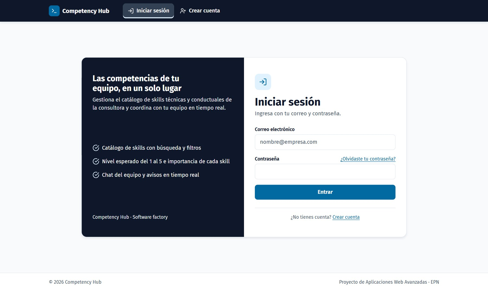
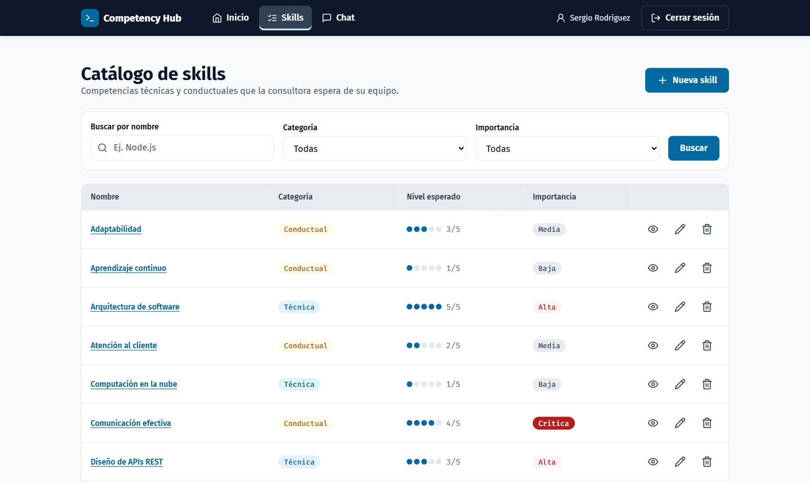
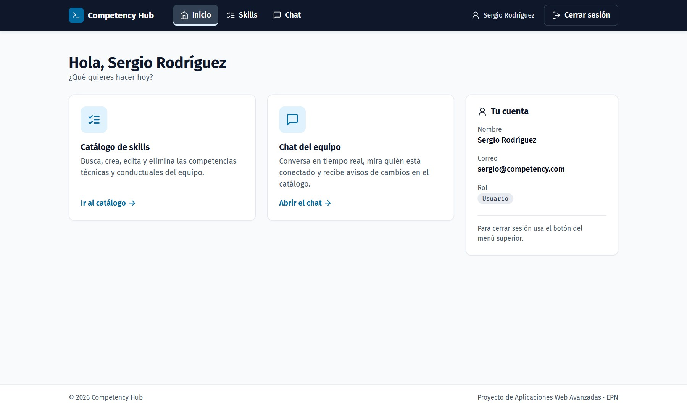
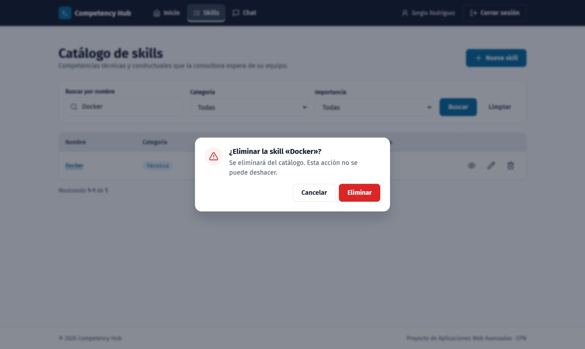
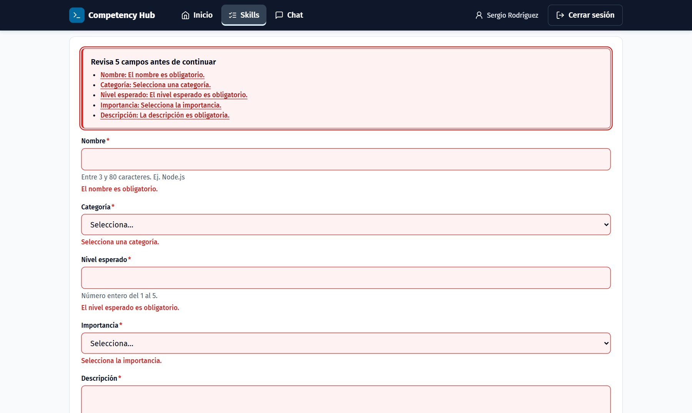
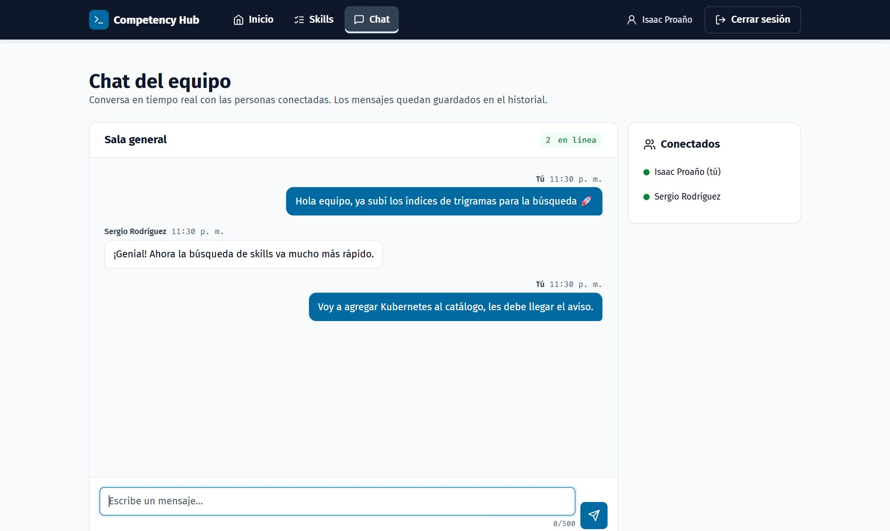
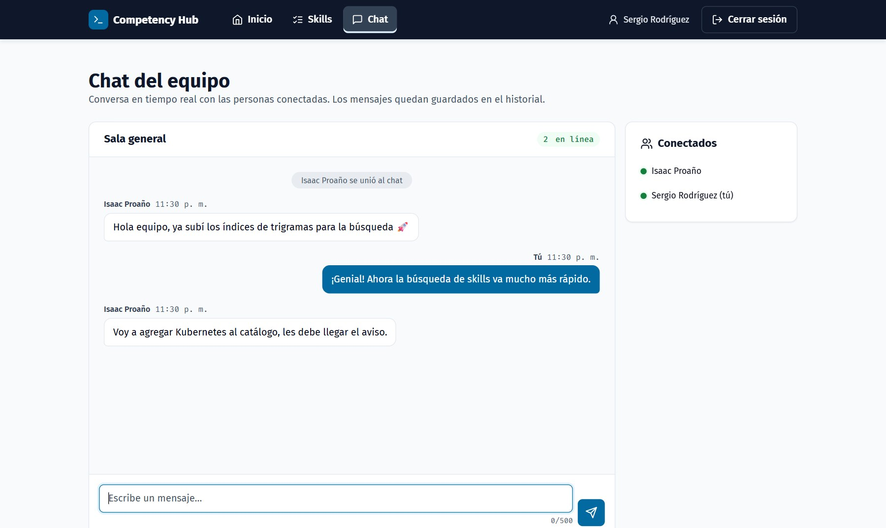
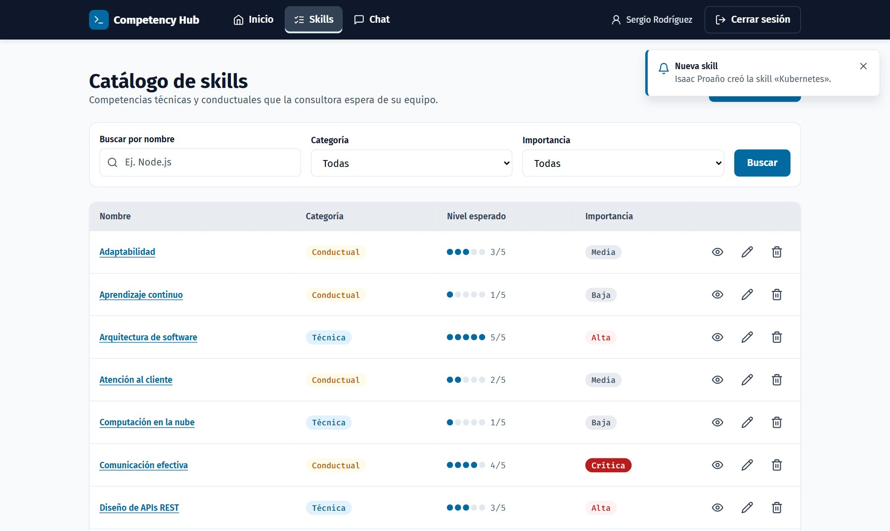
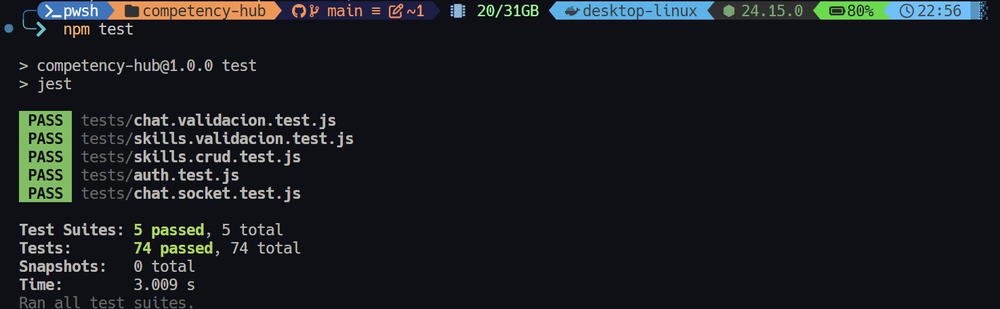
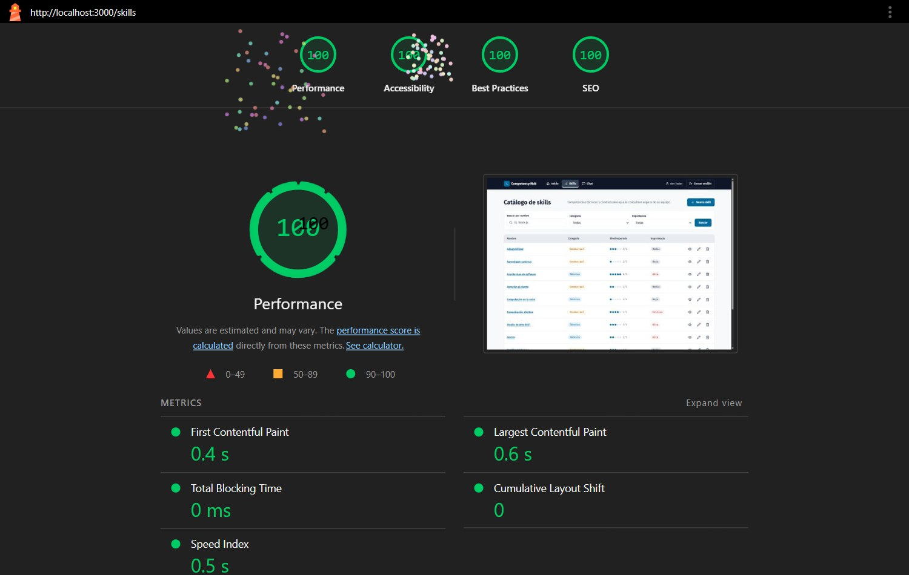

El catálogo de competencias del equipo, con chat y avisos en tiempo real, en una sola aplicación monolítica.
Una software factory local (adaptada de nuestra TIC) arma un equipo distinto para cada proyecto. Pero las competencias que espera de su gente están dispersas.
Hojas de cálculo y chats sin una versión única del catálogo.
Cuesta buscar y filtrar qué nivel e importancia tiene cada skill.
Los cambios llegan tarde al resto del equipo.
Desarrollar una aplicación web monolítica y segura que centralice el catálogo de competencias de la PYME y comunique sus cambios al equipo en tiempo real.
Registro, login, rutas protegidas y recuperación de clave.
Paginación, búsqueda, filtros y validación doble.
PostgreSQL con índices en los campos de búsqueda.
Chat con historial y avisos de cambios con Socket.IO.
Pruebas automatizadas, E2E y rendimiento medido.
Base del monolito: Express, Docker, Prisma y autenticación completa.
Sistema de diseño, BD de Skills, CRUD, chat y notificaciones (PR #1–#9).
Pulido de interfaz, validación en cliente y rendimiento (PR #10–#11).
Prueba E2E, CSP, documentación y etiqueta v1.0-b1.
Arquitectura base, autenticación y seguridad
Base de datos, índices y CRUD de Skills
Tiempo real con Socket.IO y pruebas
Interfaz, validación en cliente y rendimiento
Una rama por funcionalidad · 11 pull requests revisados antes de fusionar en main
Como visitante quiero registrarme e iniciar sesión para usar el catálogo y el chat.
Como usuario quiero recuperar mi clave con un enlace temporal para no perder el acceso.
Como líder de proyecto quiero buscar, filtrar y paginar el catálogo para encontrar rápido lo que necesito.
Como líder de proyecto quiero crear, editar y eliminar skills con confirmación para mantenerlo al día.
Como miembro del equipo quiero un chat en tiempo real con historial para coordinarme sin salir de la app.
Como miembro del equipo quiero enterarme al instante cuando alguien cambia una skill.
No funcionales: contraseñas con hash, CSRF, cabeceras seguras, validación en cliente y servidor, accesibilidad AA y buen rendimiento.
100 000 skills sintéticas · EXPLAIN ANALYZE · mediana de 3 corridas
Búsqueda ILIKE '%texto%' · GIN de trigramas
Filtro + búsqueda combinados
Total de páginas por categoría + importancia
más rápida la búsqueda: un B-tree no sirve cuando el patrón empieza con %.





Lee las mismas reglas del servidor desde los atributos HTML, muestra el error junto al campo, un resumen enfocable y evita el doble envío.
Si alguien salta el JavaScript, responde 400 con mensajes por campo. Nombre único sin distinguir mayúsculas.
CHECK de nivel 1–5 y longitudes, enums y UNIQUE.
Así se guarda una contraseña en users.password_hash (ejemplo con la clave MiClave2026):
«Credenciales incorrectas»: no revela si el correo existe.
Cookie HttpOnly + SameSite=Lax (+ Secure en producción). regenerate() al iniciar evita la fijación de sesión.
requireAuth en /dashboard, /skills y /chat: sin sesión, redirige a login.
Content-Security-Policy: default-src 'self'; script-src 'self'; object-src 'none'… Strict-Transport-Security: max-age=31536000; includeSubDomains X-Content-Type-Options: nosniff X-Frame-Options: SAMEORIGIN Referrer-Policy: no-referrer # sin X-Powered-By
Token aleatorio de 32 bytes en el enlace. El correo se simula en la consola del servidor.
En la BD solo se guarda su hash SHA-256: si roban la tabla, el enlace no sirve.
Caduca en 15 minutos. Pasado ese tiempo, el formulario responde 400.
Un solo uso: una transacción cambia la clave y marca used = true.
Además: Prisma usa consultas parametrizadas (sin inyección SQL) y EJS escapa todo lo que muestra (sin XSS).


Una entrada por usuario, aunque tenga varias pestañas.
Se guarda en chat_messages y se carga al entrar.
Vacío o > 500 caracteres se rechaza; 5 mensajes / 5 s.
Sale de la sesión, nunca de lo que envía el cliente.

El CRUD no conoce a Socket.IO: solo emite un evento de Node. El módulo de notificaciones lo reenvía.
Cada usuario está en su sala user:<id>, así quien hizo el cambio no recibe su propio aviso: ya ve el mensaje de confirmación.
Resultado: cada parte se prueba por separado.
pruebas Jest · 5 suites
verificaciones E2E

Jest + Supertest + socket.io-client: validación, CRUD con BD real, autenticación y WebSocket.
PASS SignIn correcto → /dashboard PASS Hash bcrypt en BD — $2b$12$ PASS Token de un solo uso: reutilizarlo → 400 PASS Caducidad de 15 minutos PASS Handshake sin sesión rechazado PASS 2 usuarios conectados en /chat PASS Transporte actualizado a WebSocket PASS B recibe skill:created en tiempo real PASS Paginación, búsqueda y filtros PASS POST sin token CSRF → 403 PASS Content-Security-Policy activa … TOTAL: 67/67 PASS
La prueba E2E encontró un fallo real: la Content-Security-Policy estaba desactivada. Se activó y pasó de 66/67 a 67/67.
Rendimiento en escritorio (mediana de 3 pasadas)
Primer contenido (FCP) en móvil

Accesibilidad, buenas prácticas y SEO: 100 en todas las pantallas. Punto en contra: el LCP móvil de /skills sube a 2,5 s por el repintado de la fuente; sigue en el rango «bueno».
Rutas protegidasAbrir /skills sin sesión → redirige al login.
Login y hash en la BDVer el password_hash con $2b$12$.
Recuperar claveEnlace en la consola del servidor (15 min, un uso).
CatálogoBuscar «java», filtrar y pasar a la página 2.
Validación«Nueva skill» vacía: errores junto a cada campo.
Chat en dos ventanasDos conectados y mensajes al instante.
Aviso en tiempo realCrear «Kubernetes» → toast en la otra ventana.
Eliminar con confirmaciónModal, «Eliminar» y mensaje de éxito.
El README incluye descripción de la PYME, stack, pasos de ejecución, variables de entorno, integrantes con roles y diagramas.
Incluye los merges de los pull requests.
Todo el código y la documentación generados o sugeridos fueron revisados, probados y comprendidos por los 4 integrantes. Los commits asistidos llevan la línea Co-Authored-By.
Un monolito modular cubre web y tiempo real con un solo despliegue y una sola sesión.
La seguridad funciona por capas: hash, sesión, CSRF, CSP, validación doble y WebSocket autenticado.
Medir (EXPLAIN, Lighthouse, E2E) cambió decisiones reales del proyecto.
Ramas por funcionalidad + pull requests evitaron pisarnos el trabajo.
Las pruebas E2E encuentran lo que las unitarias no ven.
Siguiente paso: correo real, rol de administrador y despliegue con HTTPS (wss).
¿Preguntas?
github.com/Jhairzp27/competency-hub · v1.0-b1